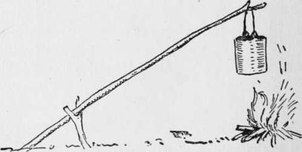
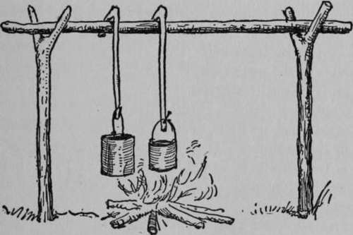
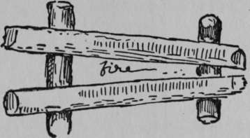
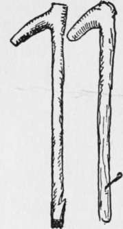
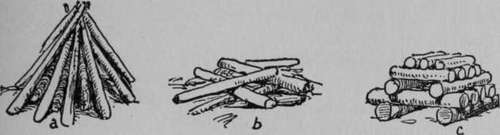

Lice And Vermin
Description
This section is from the book "The Book Of Woodcraft", by Ernest Thompson Seton. Also available from Amazon: The Book of Woodcraft.
Lice And Vermin
In certain crowded camps there is danger of head lice and body vermin. I have heard washing in potato water recommended as a sure cure. Potato water is the water potatoes have been boiled in. Most drug shops have tobacco ointment and blue ointment; a very little of these applied to the body where there is hair is a sure cure.
We all know that a camp without a campfire would be no camp at all; its chiefest charm would be absent.
Your first care, then, is to provide for a small fire and prevent its spreading. In the autumn this may mean very elaborate clearing, or burning, or wetting of a space around the fire. In the winter it means nothing.
Cracked Jimmy, in "Two Little Savages," gives very practical directions for lighting a fire anywhere in the timbered northern part of America, thus:
"First a curl of burch bark as dry as it can be, Then some twigs of soft wood, dead, but on the tree, Last of all some pine-knots to make the kittle foam, And there's a fire to make you think you're settin' right at home".
If you have no birch bark, it is a good plan to shave a dry soft-wood stick, leaving all the shavings sticking on the end in a fuzz, like a Hopi prayer stick. Several of these make a sure fire kindler. Fine splinters may be made quickly by hammering a small stick with the back of the axe.
In the case of a small party and hasty camp, you need nothing but a pot hanger of green wood for a complete kitchen, and many hundreds of times, on prairie and in forest, I found this sufficient.
A more complete camp grate is made of four green logs (aspen preferred), placed as in the illustration. Set the top logs 3 inches apart at one end, 10 inches at the other. The top logs should be flattened in the middle of their top sides - to hold the pot which sits on the opening between the top logs. The fire of course is built on the ground, under the logs. Sometimes stones of right size and shape are used instead of the logs, but the stones do not contribute anything to the heat and are less manageable.
Camp Kitchen
In addition to this log grate, more elaborate camps have a kitchen equipped with a hanger as below, on which are pot hooks of green wood.
In wet weather, an axeman can always get dry wood by cutting into a standing dead tree, or on the under side of down timber that is not entirely on the ground.
On the prairies and plains, since buffalo chips are no more, we use horse and cow chips, kindled with dry grass and roots of sage-brush, etc.
To keep a fire alive all night, bank the coals: i. e., bury them in ashes.
Always put out the fire on leaving camp. It is a crime to leave a burning fire. Use buckets of water if need be.
Council Fire
The Council-fire is a very different thing from the cooking fire or the so-called bonfire. And there are just as many ways of making it wrong.
These are the essentials:
It must be easily started.
It must give a steady, bright light.
It must have as little heat as possible, for it is mostly used in the summer. Therefore, it must be small.
It is best built as in (c), about two and one half feet high; the bottom stick about three feet long; the rest shorter and smaller.
The small wood and chips to light it can be put either under or on top of the second layer.
It should be drawn in toward the top, so as to burn without falling apart.
It must contain a large proportion of dry, winter-seasoned wood, if it is to blaze brightly. The readiest seasoned wood is usually old lumber.
Bad Bad Good
The bonfire is always bad. It wastes good wood; is dangerous to the forest and the camp; is absolutely unsociable. A bonfire will spoil the best camp-circle ever got together. It should be forbidden everywhere.
Firearms
Experience shows that it is unwise to have firearms in camp. And no one under fourteen years of age should be allowed the use of a gun or pistol under any circumstances.
The didn't-know-it-was-loaded fool is the cause of more sorrow than the deliberate murderer.
For any one to point a firearm at another is a crime. If he didn't know it was loaded, he should be still more severely punished.
Never let the muzzle of the gun sweep the horizon.
Never carry a gun full-cock or hammer down. The half-cock is made for safety. Use it.
Never pull a gun by the muzzle.
Never shoot at anything about which you are in doubt.
For an all-evening Council-fire, at least three times as much should be in stock as on the fire when started. Here are some wrong methods.
The high pyramid or bonfire, (a) goes off like a flash, roasts every one, then goes dead. The shapeless pile (b), is hard to light and never bright.
Continue to:
Tags
bookdome.com, books, online, free, old, antique, new, read, browse, download